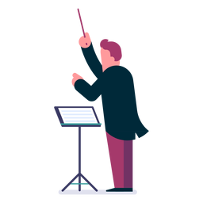

Historia da Orquestra
A origem da palavra é grega: “orkestra” significava “lugar destinado à dança”. No século V a.C., os espetáculos eram encenados em anfiteatros e “orquestra” era o espaço situado logo à frente da área principal do palco, ocupado pelo coro e pelas danças. Ficavam ali também os instrumentistas. Séculos depois, mais precisamente no século XVII, na Itália, as primeiras óperas começaram a ser executadas. Como eram imitações dos dramas gregos, o espaço entre o palco e o público, onde ficavam os instrumentistas, também era chamado de orquestra. Daí o sentido da palavra evoluiu ao que hoje conhecemos, designando o conjunto de instrumentos musicais reunidos com o intuito de executar uma obra musical.
O que faz um maestro?
Um maestro é considerado o líder de uma orquestra ou banda, responsável por controlar o ritmo, a direção e o tom geral do grupo. Além disso, o maestro é responsável por ensinar e motivar os músicos, ajudando-os a tocar com precisão, equilíbrio, unidade e energia. Um maestro deve ter um conhecimento profundo dos elementos musicais, além de habilidades de liderança. Isso significa que eles devem ser capazes de ler partituras, reconhecer todos os instrumentos individuais e seus timbres, e ter um bom senso de ritmo e harmonia.
É uma experiência única!
Deguste um trecho desse espetaculo!